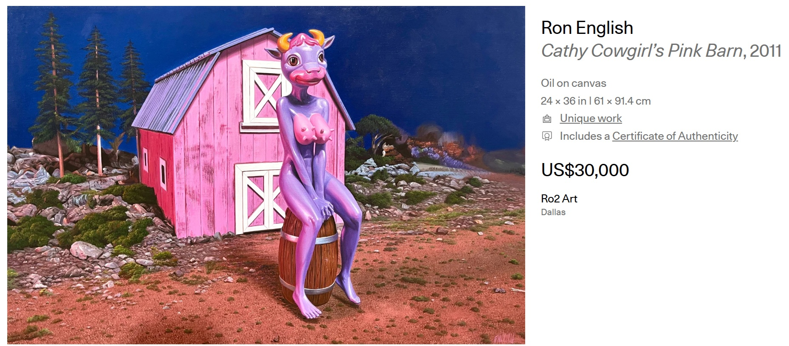

Exhibitions
Crucial Fiction, Opera Gallery, New York, New York, US, November 1–29, 2012.
Welcome to New Jersey, Jonathan LeVine Projects @ Mana Contemporary, Jersey City, New Jersey, US, February 18–March 18, 2017.
Literature
Ron English, Fauxlosophy: The Art of Ron English (San Francisco: Last Gasp, 2016), p. 70. ISBN 978-0867196566.
Ron English, Death and the Eternal Forever (London: Korero Press, 2014), p. 78. ISBN 978-0957664920.
Ron English, Original Grin: The Art of Ron English (Paris: Cernunnos, 2019), p. 359. ISBN 978-2374950938.
Notes
Also known as Milk Made Momma.
In Death and the Eternal Forever, this work is mislabeled as Milk Made Momma, a title also used by Jonathan LeVine Gallery.
This work appears in exhibition photographs published in juggernut3, “Openings: Ron English – ‘Crucial Fiction’ @ Opera Gallery (New York),” Arrested Motion, November 19, 2012.
This work also appears in images published with RJ Rushmore’s coverage of Crucial Fiction at Opera Gallery, New York, on Vandalog.
Artsy’s artwork page documents the work under the title Cathy Cowgirl’s Pink Barn, with the same date, medium, and dimensions used here.
Ron English assembled and photographed a reference set as a model for this work.
Ancillary Documentation



Selected Online Circulation
Selected examples of the work’s online circulation, reproduction, or discussion. This list is not exhaustive; it is intended to document representative appearances of the image beyond formal exhibition and publication records.